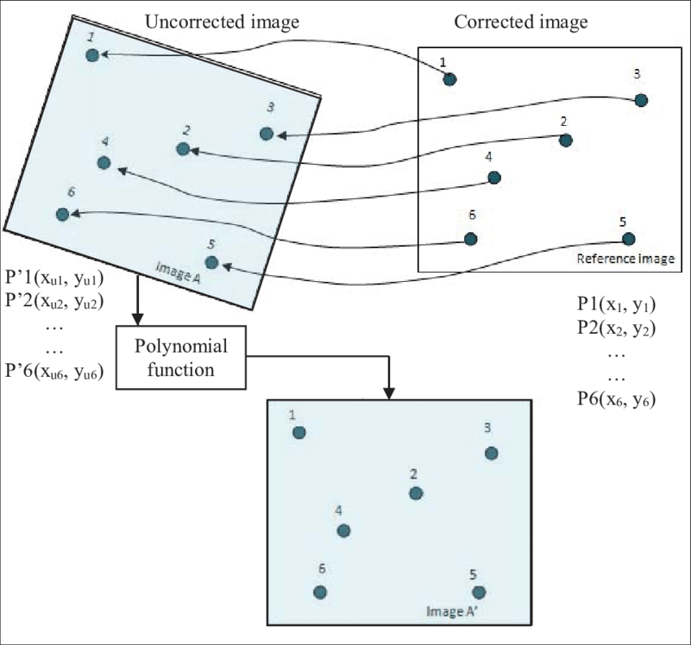
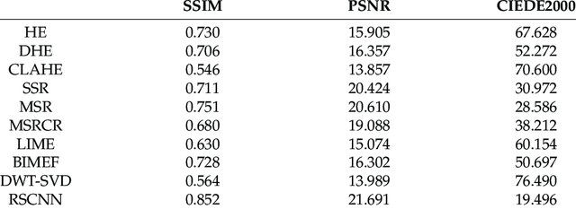

3 Week 3
3 Remote Sensing Data
3.1 Summary
Causes of Remote Sensing Data Distortion
Remotely sensed images often require corrections to be available for analysis. The image distortions occur due to the following factors:
- View angle: depending on the angle of the sensor, the area of interest might look different.
View angle (Source: Shen et al., 2021)
- Topography: the shape of terrain might cause some flaws in the image.
The impact of topography on remote sensing images (Source: Julia Lenhardt)
- Earth rotation: Earth’s spinning motion poses another difficulty. Straight lines of an image can appear to be unnaturally curved or deformed.

Effect of Earth’s motion (Source: National Learning Network for Remote Sensing)
- Wind, and so on.
Data Corrections
4 types of data correction methods are available for distorted images. These are Geometric, Atmospheric, Orthorectification corrections!
First, we can kick off with Geometric Correction!
Geometric Correction
Geometric errors are normally introduced by internal and external factors (attitude and altitude change). And Ground Control Points (GPS) can be used for correcting the errors! This means, basically, we are identifying so-called “known points” in both sensed image and a reference data and use them to build regression models! But we need each GCP, which are “image coordinate” and “map coordinate”.
GPS points from a map and Landsat image (Source: GeoLearn)
- Solution:
Linear Regression in a “Backward mapping” fashion can be an answer to this problem. Backward mapping is going from output image to input image. This method goes through one pixel at a time and for each position in output image to calculate where in the input image a pixel must come from.
The result can be verified by using RMSE. The lower the value is, the more accurate the result is, and the threshold RMSE value is 0.5. To reduce the RMSE, more GPS can be added as well.But when we do this, we have to re-sample the final raster data. There are several resample methods, such as Nearest Neighbour, Linear, Cubic and Cubic spline.

Geometric Correction (Source: Abdul Basith)

Nearest Neighbour Resampling method (Source: AWF-WIKI)
Atmospheric Correction
Atmospheric correction removes scattering and absorption effects of the atmosphere to improve the image. Absorption and scattering makes an image somewhat blurry as they reduce contrast of image.

Example of an image before and after atmospheric correction (Source: NASA)
- Solution: there are two kinds of approaches - relative and absolute.
Relative atmospheric correction typically consists of two methods.
- Dark Object Subtraction (DOS): searches each band for the darkest pixel value. The scattering is removed by subtracting this value from every pixel in the band.
An improved image after DOS (Source: Wang et al., 2019)
- Pseudo-Invariant Features (PIFs): is grounded upon statistical invariance of artificial elements, which do not exhibit seasonal variation. The differences in PIFs reflectance between dates are assumed to be due to atmospheric conditions and are linearly related.An improved image after employing PIFs (Source: Schott et al., 1988)
Relative atmospheric correction convert digital brightness values into scaled surface reflectance by using atmospheric radiative transfer models.

Before and after atmospheric correction using radiative transfer method (Source: Advanced Remote Sensing)
Orthorectification Correction
This method removes distortions by making the images looked right above (at nadir). This correction necessiates sensor geometry and an elevation model.

An example of orthorectification correction (Source: Esri Insider, 2016)
Data Join
Joining remote sensed images are coined as “Mosaicking”. Using histogram matching algorithm, similar brightness values are given to two images that are overlapped, and then the feathering is conducted.

Six raster datasets are joined into one image (Source: ArcMap)
Image Enhancement
Materials reflect different amounts of energy in the same wavelengths. However, sensors have a fixed range of Digital Number (DN) values between 4 to 105. If we expand this range, we could enhance the visual appearance of images. There are several methods to do this, which include Minimum-Maximum, Percentage Linear and Standard Deviation, and Piecewise Linear Contrast Stretch.
- Minimum-Maximum: utilises the full range of available brightness values
Minimum-Maximum Linear Stretch (Source: OneStopGIS)
- Percentage Linear and Standard Deviation Stretch: is similar to the Minimum-Maximum linear contrast stretch but this method uses a specified minimum and maximum values that situate between a certain percentage of pixels from the mean of the histogram.
Percentage Linear Contrast Stretch (Source: OneStopGIS)
- Piecewise Linear Contrast Stretch: is used when the distribution of a histogram in an image is bi or trimodal (Jensen and Schill, n.d.).
Piecewise Linear Contrast Stretch (Source: Tsai and Yeh, 2008)
3.2 Application
Image enhancement techniques not only enhance visual appearance but also allows for comparison between images retrieved from different years.
Han-qiu (2011) has attempted to compare thermal images from different years with the same date in order to investigate urban heat island (UHI). The thermal infrared bands of different date were processed with several image enhancement technologies.
To detect change of the UHI between different dates, the two thermal imageries were normalised and scaled to reduce the impacts caused by seasonal variations or weather conditions. Then, the images were overlaid to show difference between images by subtracting correponding pixels.
This research demonstrates how we can employ image enhancement technologies to compare images from different years in a quantitative fashion.
In addition to image enhancement technologies covered in the lecture, Hu et al. (2020) demonstrated that Convolutional Neural Networks (CNN) can enhance visual appearance of image greatly. The authors carried out performing several different image enhancement technologies on low-quality image.
Results of different image enhancement methods (Source: Hu et al., 2020)
Their findings suggest remote-sensing CNN (RSCNN) has proven to be the most efficient method in enhancing visualisation effects and allowing a better interpretation. RSCNN showed the superiority in terms of Structural Similarity Index (SSIM) and Peak Signal-to-Noise_Ratio (PSNR) over conventional techniques.

SSIM and PSNR of different image enhancement methods (Source: Hu et al., 2020)
This research somehow offered potentials in combining two different fields of studies - CNN and remote sensing -, and suggested that adding complexity to imagery can help us more natural results with more realistic textures and vivid details.
3.3 Reflection
This week’s content gave me an answer for the questions I had from the first week. Numerous data correction technologies improve the quality of image collected and allow for facilitating data to be ready for analysis.
However, as there are a variety of correction methods, it seems necessary to understand what causes flaws in the remotely sensed images and how to employ an appropriate correction method to that specific datasets. In addition, I wonder whether there is a preference in a particular correction method over other correction methods, depending on the domain of study field or industry.
Lastly, as we went through numerous technologies which enable us to identify objects or areas in a better and higher resolution. However, in the context of built environment, there are many objects in cities that look similar to each other, and this might pose a difficulty in classifying them.
In Data Science module, I came across a deep learning model called YOLOv5, which detects objects in remotely sensed images. The model was trained on custom datasets. Once the training is done, the model can be applied to satellite imagery of different resolutions and identify objects.
Objects indicated by a bounding box and its probability (Source: Google Earth Engine for OSINT)
If we create a customised dataset which contains specific information about some types of urban infrastructure, and feed these to train a model, we might be able to build a deep learning object detection model targeted at urban environment. Together with the data correction and image enhancement methods we learnt, I think the object detection model could enable us to classify some technically-challenging objects in an urban setting.
3.4 References
Google Earth Engine for OSINT. (n.d.) ‘Object Detection in Satellite Imagery’[Online]. Available at: https://oballinger.github.io/GEE_OSINT/object_detection.html (Acessed: 08.02.2023)
Jensen, J.H. and Schill, S.R. (n.d.) ‘Contrast Enhancement’[PDF]. Available at: http://knightlab.org/rscc/legacy/RSCC_Contrast_Enhancement.pdf (Accessed: 08.02.2023)